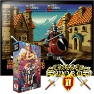

Neo Geo · Nº 22
Crossed Swords 2 (bootleg of CD version)
- Año: 1996
- Desarrollador: bootleg (Razoola)
- Género: Rol / Acción
- Jugadores: 2 jugadores
Secuela de Crossed Swords: un juego de acción y rol en el que se ve al héroe de espaldas, como una silueta transparente. Varias décadas después del primer juego, el castillo del señor demonio Nausizz vuelve a surgir del infierno y sus monstruos amenazan el reino de Belkana. Tres aventureros, cada uno con sus ventajas, recorren doce actos para acabar con él.
Añade experiencia y niveles, un botón para saltar y esquivar, y una tienda entre actos donde se compran curaciones y magias con el oro ganado. Salió solo en Neo Geo CD en 1995; esta es una conversión pirata a cartucho.
Controles
qué hace cada botón. Según Wikipedia, esta segunda parte añade un botón para saltar y esquivar.
Acción en primera persona: A, B y C abajo.
| Panel | Juego |
|---|---|
 | A · Atacar (⚠️ por confirmar) |
 | B · Lanzar magia (⚠️ por confirmar) |
 | C · Saltar o esquivar (⚠️ por confirmar) |
  | Empezar |
 | Meter una moneda |
+  | Salir del juego |
El panel en Neo Geo

Argumento
Recopilado de internet (2026-11-02). Lo marcado con ⚠️ no está probado en la bartop.
Varias décadas después del primer juego, el castillo del señor demonio Nausizz vuelve a surgir del infierno y sus siervos amenazan con conquistar Belkana.
Tres aventureros recorren el reino para acabar con él.
Final: los héroes llegan al castillo de Raduin y vencen a Nausizz en el combate final.
Fuentes
Jugabilidad
Recopilado de internet (2026-11-02). Lo marcado con ⚠️ no está probado en la bartop.
- Tipo de juego: acción y rol de ADK (1995). Salió solo en Neo Geo CD; la de la bartop es una conversión pirata a cartucho.
- Personajes: 3 guerreros, cada uno con sus ventajas.
- Novedades: experiencia y niveles, y un botón para saltar y correr que permite esquivar.
- Tienda: tras cada acto se compran objetos de curación y magias, y se sube de nivel con el oro.
- Continuaciones: limitadas.
- Supervivencia: un modo aparte con oleadas infinitas de monstruos.
- Estructura: 12 actos (ver «Guía de niveles»).
Fuentes
Guía de niveles
Recopilado de internet (2026-11-02). Lo marcado con ⚠️ no está probado en la bartop.
| Acto | Nombre y jefe |
|---|---|
| 1 | Messenger of Darkness · Hyper Rat |
| 2 | War Returns to Belcana · Mobile Rat |
| 3 | Dirios Arena |
| 4 | Blue Knight of Dirios · Shadow Knight |
| 5 | Mighty Attack, Gold Gammer! |
| 6 | Evil Turtle of Guld Marsh · Mad Turtle |
| 7 | Deadly battle at Urau Desert |
| 8 | Evil Shrine Greydar · Skeleton Worm |
| 9 | Ice Hole of Girea · Master Samurai |
| 10 | Evil Ice Statue · Ice Golem |
| 11 | To the land of evil… · Zain & Gimell |
| 12 | Evil Castle Raduin · Nausizz (jefe final) |
Fuentes
Objetos
Recopilado de internet (2026-11-02). Lo marcado con ⚠️ no está probado en la bartop.
- Objetos de curación y magias, que se compran en la tienda con el oro. ⚠️ Las fuentes no dan la lista.
Fuentes
Trucos y secretos
Recopilado de internet (2026-11-02). Lo marcado con ⚠️ no está probado en la bartop.
Secretos
- Modo supervivencia, aparte de la campaña. ⚠️ No sé si está en esta conversión.
Fuentes
Longplay

Partida completa de la versión Neo Geo CD (la original de la que sale esta conversión) (48 min), de LongplayArchive: Longplay of Crossed Swords II.
Pulsa el minuto de un nivel para ver el vídeo desde ese punto.